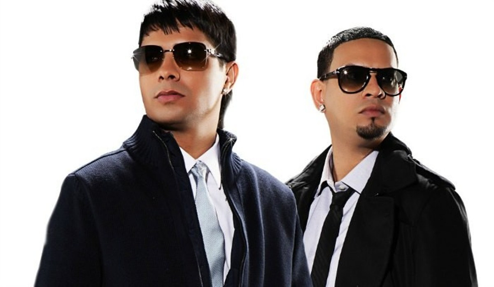

Nombre del Personaje / Disfraz
Chencho Corleone (Plan B)

Descripción del Personaje
Chencho Corleone es un reconocido artista del género urbano, famoso por su estilo distintivo y su participación en el dúo Plan B. Como disfraz de Halloween, este personaje destaca por su look moderno, gafas oscuras, cadenas llamativas y atuendo urbano. Su presencia evoca el ambiente de la música reggaetón de los años 2000, ideal para quienes buscan un disfraz con actitud, ritmo y autenticidad. Aunque no es un personaje de terror, su imagen imponente y estilo callejero lo convierten en una opción original y llamativa para fiestas temáticas.
Categoría del Personaje
Urbano / Cultura pop, cantante de reguetton